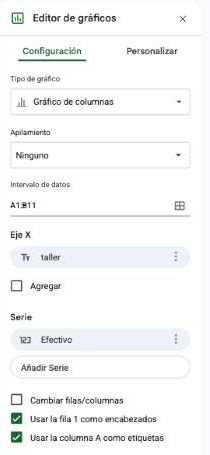

Por qué separar datos en varias hojas
En tu archivo, el arancel está escrito en cada fila. Si en agosto sube un 20%, hay que tocar una celda por cada inscripción que lo usa, y no queda ningún registro de si te olvidaste alguna. Ya viste una consecuencia: aranceles en cero y negativos que alguien cargó o corrigió a mano.
De dónde venimos
En las clases anteriores armaste el archivo de La Usina: la hoja DATOS con las 336 inscripciones, sus importes y una columna situacion que clasifica sola (Válida, No cuenta, Revisar, Duplicada); un panel RESUMEN con los tres números del total y los subtotales por sede y por taller; una hoja PARAMETROS, una hoja LISTAS que alimenta las validaciones y un LEEME. Hoy ese archivo suma dos hojas más y deja de repetir información. Hacé una copia con Archivo → Hacer una copia y nombrala 2026-XX-XX_Informatica_Clase10_V01.
💡 Consejo: Si no tenés el archivo a mano
Si no tenés el archivo a mano, el punto de partida es el de la Clase 09: DATOS con las columnas A a Q (de id_inscripcion a cuenta, con situacion en la O y importe_valido en la P). También podés trabajar con una tabla propia de al menos ocho filas que tenga una columna de categoría repetida: todo lo de hoy funciona igual.
⚠️ Atención
Todo lo de hoy asume que podés fijar una referencia con $ sin pensarlo. BUSCARV y BUSCARX casi siempre necesitan una referencia absoluta para funcionar bien, y el error que produce olvidarla es silencioso: la fórmula devuelve resultados, solo que equivocados.
El dato vive una sola vez
Amontonar todo en una hoja hace que la información se repita y sea difícil de mantener: si cambia un arancel, tendrías que corregirlo en todas las filas donde aparece. Peor: si corregís nueve de diez, el archivo sigue calculando y nadie se entera.
La alternativa es separar la información en tablas más chicas, cada una en su propia hoja, y conectarlas con una fórmula en el momento en que se necesitan juntas. La información vive una sola vez, en un solo lugar, y se busca cuando hace falta, no se copia.
💡 Consejo
Antes de armar cualquier planilla con varias hojas, preguntate: "¿este dato puede cambiar en el tiempo y se repite en muchas filas (un arancel, el nombre de un docente, un cupo)?" Si la respuesta es sí, ese dato tiene que vivir en una hoja de referencia, no copiado y pegado en todos lados.
Trabajar con varias hojas
- Para crear una hoja nueva, hacé clic en el signo + en la parte inferior izquierda.
- Para renombrarla, doble clic sobre su pestaña.
- Para referenciar una celda de otra hoja, la sintaxis es
NombreDeHoja!Celda. Por ejemplo,=TALLERES!B2trae el contenido de la celda B2 de la hojaTALLERES. - Para traer una hoja de otro archivo, Archivo → Importar → Subir, y elegir "Insertar hoja(s) nueva(s)". Funciona con archivos de Excel (
.xlsx), cada hoja del libro se convierte en una hoja nueva.
⚠️ Atención
Si el nombre de la hoja tiene espacios o tildes, hay que encerrarlo entre comillas simples: ='Lista de Talleres'!B2. La planilla suele agregarlas automáticamente cuando hacés clic en la celda de otra hoja en lugar de escribir la fórmula a mano, por eso, siempre que se pueda, es más seguro clickear que tipear. Y mejor todavía: nombrá las hojas sin espacios ni tildes desde el principio.
El encargo de esta semana
El panel funcionó, y los números reconcilian casi todos. Ahora llega un pedido de otro tipo: ya no son datos que sobran o están mal escritos, sino información que falta en tu archivo y que existe en otro lado.

Dos cosas.
La primera: los aranceles de las inscripciones los cargó cada uno a mano y algunos quedaron mal, ya viste los negativos y los ceros. Los valores oficiales están en el catálogo de talleres, que además tiene datos que hoy no están en tu archivo y me sirven: el cupo de cada taller y quién lo dicta. Necesito que la planilla vaya a buscar sola el arancel oficial, que me avise cuando una inscripción no coincide, y que la sede vacía se complete con la del catálogo. Te paso también la nómina de docentes, con la fecha de alta de cada uno.
Y una pregunta puntual: de los pendientes, ¿cuántos llevan más de 30 días sin confirmarse al cierre del 5 de junio? Y ¿hay inscripciones anteriores al alta del docente del taller? Serigrafía arrancó recién en mayo.
La segunda: el jueves tengo reunión y no voy a llevar una planilla. Necesito un gráfico. Uno solo, que se entienda sin que yo lo explique.
Gracias.
Qué te está pidiendo realmente
| Lo que dice el pedido | Lo que hay que hacer | Herramienta de esta clase |
|---|---|---|
| "Los valores oficiales en un solo lugar" | Mudar el dato de referencia a su propia hoja, con una fila por taller | Hoja aparte + referencia Hoja!Celda |
| "Que la planilla vaya a buscarlos sola" | Traer el valor a cada fila según su taller, sin copiar y pegar | BUSCARV / BUSCARX |
| "Datos que hoy no están en tu archivo" | Enriquecer cada inscripción con atributos que solo existen en la tabla de referencia | Varias búsquedas sobre la misma tabla |
| "Que me avise cuando no coincide" | Prever el caso "no encontrado" en vez de dejar un error a la vista | SIERROR / argumento propio de BUSCARX |
| "Cuántos días llevan sin confirmarse" y "anteriores al alta" | Calcular con fechas y comparar una fecha contra otra | HOY, DIAS, MES, restas de fechas |
| "Un gráfico que se entienda sin que yo lo explique" | Elegir el tipo según la pregunta y titular con la conclusión | Editor de gráficos |
Las tablas de referencia de La Usina
Son dos archivos de Excel, cada uno con una hoja. Descargalos y vas a importarlos en la primera actividad: Catalogo_talleres_2026.xlsx (hoja TALLERES) y Docentes_LaUsina_2026.xlsx (hoja DOCENTES).
TALLERES, el catálogo vigente:
| taller | docente | sede | cupo | arancel_base |
|---|---|---|---|---|
| Cerámica | Valeria Núñez | Sede Centro | 18 | 14000 |
| Guitarra | Emiliano Pais | Sede Centro | 12 | 12000 |
| Fotografía analógica | Rocío Beltrán | Sede Norte | 15 | 16000 |
| Yoga | Marina Suárez | Sede Sur | 20 | 10000 |
| Huerta orgánica | Tomás Leiva | Sede Norte | 16 | 9000 |
| Serigrafía | Julieta Campos | Sede Centro | 14 | 15000 |
| Percusión | Braian Ortiz | Sede Sur | 18 | 11000 |
| Costura creativa | Noelia Ferreyra | Sede Norte | 15 | 13000 |
DOCENTES, la nómina:
| docente | taller | fecha_alta | contacto |
|---|---|---|---|
| Valeria Núñez | Cerámica | 2024-03-01 | valeria.núñez@lausina.org.ar |
| Emiliano Pais | Guitarra | 2023-08-15 | emiliano.pais@lausina.org.ar |
| Rocío Beltrán | Fotografía analógica | 2025-02-10 | rocío.beltrán@lausina.org.ar |
| Marina Suárez | Yoga | 2022-11-01 | marina.suárez@lausina.org.ar |
| Tomás Leiva | Huerta orgánica | 2024-06-01 | tomás.leiva@lausina.org.ar |
| Julieta Campos | Serigrafía | 2026-05-04 | julieta.campos@lausina.org.ar |
| Braian Ortiz | Percusión | 2023-03-20 | braian.ortiz@lausina.org.ar |
| Noelia Ferreyra | Costura creativa | 2024-09-12 | noelia.ferreyra@lausina.org.ar |
💡 Consejo: Lo que no aparece también cuenta
Fijate que hay un taller de más en el catálogo: Percusión existe, pero no tuvo ninguna inscripción. Eso también es información, y sale de la tabla de referencia: nadie la había pedido.
BUSCARV
Tenés en cada fila el nombre de un taller y, en otra hoja, una tabla con todos los talleres y sus datos. BUSCARV (búsqueda vertical) es la función que le pide a la planilla "buscá este taller y traeme el valor que está cinco columnas más a la derecha": busca un valor en la primera columna de un rango y devuelve el valor de otra columna de esa misma fila.
Sintaxis
valor_buscado: el dato que querés encontrar (por ejemplo, el taller de la inscripción).rango: el rango donde buscar. La columna con el valor a buscar tiene que ser la primera columna de ese rango.índice: el número de columna (contando desde 1, dentro del rango) de donde se trae el resultado.ordenado:FALSOpara una coincidencia exacta (lo que vas a usar casi siempre);VERDADEROpara una coincidencia aproximada, que requiere que la tabla esté ordenada.
Con el taller en la columna A de la hoja TALLERES y el arancel base en la columna E (la quinta):
⚠️ Atención: La referencia al rango debe ser absoluta
Si copiás esta fórmula hacia abajo sin fijar el rango con $, la planilla va a desplazar el rango de búsqueda fila por fila y en algún momento te vas a "salir" de la tabla de referencia. El valor_buscado (D2) sí debe quedar relativo: cada fila busca lo suyo. Es el error número uno con esta función, y no siempre avisa: a veces devuelve un número, del registro equivocado.
Las dos limitaciones de BUSCARV
- Solo busca hacia la derecha: la columna de resultado tiene que estar a la derecha de la columna de búsqueda dentro del rango.
- La columna de búsqueda tiene que ser la primera del rango seleccionado: no se puede buscar por una columna que está en el medio o al final.
Estas dos limitaciones son la razón por la que existe BUSCARX.
Traer el arancel oficial desde su propia hoja
Antes de tocar tu archivo, dos tablas chiquitas para aislar la mecánica.
- En una hoja nueva llamada
Productos, cargá cuatro filas:P001Cuaderno Papelería 850 ·P002Mochila Accesorios 15000 ·P003Resma A4 Papelería 4200 ·P004Cartuchera Accesorios 6500. En otra hoja llamadaPedidos, cargá tres filas con código y cantidad:P0022 ·P00110 ·P0041. - En
Pedidos, traé el nombre y el precio conBUSCARV, y agregá una columna "Total" (cantidad × precio). Deberías obtener 30.000, 8.500 y 6.500. Cambiá el precio del Cuaderno enProductosy confirmá que el total dePedidosse actualiza solo: eso es lo que no pasaba cuando el precio estaba copiado en cada fila. - Importá las dos tablas de La Usina a tu archivo: Archivo → Importar → Subir, "Insertar hoja(s) nueva(s)", una vez por cada archivo. Tienen que quedar las hojas
TALLERESyDOCENTES(si Sheets les puso otro nombre, renombralas). - En
DATOS, agregá una columnaarancel_oficial(laR) que traiga conBUSCARVel arancel base desdeTALLERES, buscando por el taller de cada fila. Rango absoluto, valor buscado relativo, coincidencia exacta. Vas a ver#N/Aen 4 filas: son los talleres escritos comoFoto analogicayCeramica Avanzada, que no existen en el catálogo.📷 Captura pendiente Barra de fórmulas de Google Sheets con la celda R2 de DATOS activa, mostrando la fórmula BUSCARV completa (con el rango de TALLERES fijado con $) y el resultado ya calculado en la celda. - Envolvé la fórmula con
SIERRORpara que muestre "Taller no encontrado" en lugar del error:=SIERROR(BUSCARV(D2; TALLERES!$A$2:$E$9; 5; FALSO); "Taller no encontrado"). Contá conCONTAR.SIcuántas filas dicen eso: tienen que ser 4. Un#N/Aen pantalla le dice a quien abre el archivo que está roto; un "Taller no encontrado" le dice qué hacer. - Agregá una columna
control_arancel(laS) que compare el arancel cargado con el oficial:=SI(R2="Taller no encontrado"; "Sin dato"; SI(H2=R2; "Ok"; "Difiere")). ConCONTAR.SI, contá las filas "Difiere": tienen que ser 11, exactamente las filas que la regla roja de la Clase 08 había marcado (aranceles en cero y negativos). Acá quedó probado que eran aranceles mal cargados y no aranceles distintos de verdad. - Agregá una columna
sede_ok(laT) que complete la sede vacía con la del catálogo:=SI(E2=""; SIERROR(BUSCARV(D2; TALLERES!$A$2:$E$9; 3; FALSO); "Sin sede"); E2). Después cambiá los subtotales por sede deRESUMENpara que mirensede_oken lugar desede. Ahora sí cierran: Sede Centro $1.384.300 (120), Sede Norte $915.500 (83) y Sede Sur $397.000 (45), y la línea "Sin sede" da $0. - Probá el efecto: subí un 20% el arancel de Yoga en
TALLERESy mirá cómoarancel_oficialycontrol_arancelreaccionan. Después devolvelo a su valor.
 Actualizá tu LinkedIn
Actualizá tu LinkedIn
Google Sheets. Cómo la justificás: conecto tablas alojadas en hojas distintas con funciones de búsqueda, manteniendo cada dato de referencia en una única fuente de verdad en lugar de duplicarlo fila por fila, y controlo el caso de valor no encontrado en vez de dejar un error a la vista.
BUSCARX
BUSCARX es la evolución de BUSCARV (y también reemplaza a BUSCARH, su equivalente horizontal). Resuelve las dos limitaciones que viste recién.
Sintaxis
valor_buscado: igual que enBUSCARV.matriz_buscada: el rango (una sola columna o fila) donde está el valor a buscar. No tiene que ser la primera columna de nada.matriz_devuelta: el rango de donde se trae el resultado, puede estar a la izquierda o a la derecha de la matriz buscada.si_no_hay_valor: qué mostrar si no encuentra el valor. Reemplaza la necesidad de envolver la fórmula conSIERROR.
El docente del taller de cada inscripción, resuelto con BUSCARX:
BUSCARV frente a BUSCARX
BUSCARV | BUSCARX | |
|---|---|---|
| Dirección de búsqueda | Solo hacia la derecha | Cualquier dirección |
| Posición de la columna de búsqueda | Debe ser la primera del rango | Puede estar en cualquier posición |
| Si se insertan columnas | El índice numérico queda desfasado y devuelve otra columna, sin avisar | Apunta a rangos, no a números de posición: no se desfasa |
| Manejo de errores | Requiere SIERROR aparte | Tiene un argumento propio para el valor de error |
| Disponibilidad | Función clásica, en todas las versiones | Más moderna; en Excel requiere una versión reciente (Microsoft 365) |
💡 Consejo
BUSCARX es más flexible y más prolija, pero BUSCARV sigue siendo la que más vas a encontrar en planillas hechas por otras personas, sobre todo en Excel de escritorio. Conviene manejar las dos: una para escribir, la otra para poder leer y arreglar lo que ya existe.
El docente y el cupo de cada taller
Antes de tocar tu archivo, la misma búsqueda de la actividad anterior, pero más corta.
- Sobre las hojas
ProductosyPedidosde la Actividad 01, traé la categoría del producto conBUSCARXen lugar deBUSCARV, usandosi_no_hay_valorcon el texto "Revisar código". Agregá una fila enPedidoscon el códigoP999: confirmá queBUSCARXmuestra el texto de reemplazo mientras que elBUSCARVde al lado muestra#N/A. - En
Productos, insertá una columna nueva entre "Nombre" y "Categoría". Mirá qué le pasa alBUSCARV(se desfasa y trae otra columna, sin avisar) y qué le pasa alBUSCARX(nada, sigue apuntando a la misma). Esa diferencia es la razón práctica más fuerte para preferirBUSCARX. Sacá la columna que insertaste antes de seguir. - Buscar hacia la izquierda: en
Productos, movés la columna del precio para que quede a la izquierda del código. Intentá traer el precio conBUSCARVy confirmá que no hay forma sin reorganizar la tabla. Resolvé el mismo caso conBUSCARX. Devolvé la tabla a su orden original. - En
DATOS, agregá una columnadocente(laU) conBUSCARXsobreTALLERES, como en el ejemplo de arriba. Tiene que dar "Taller no encontrado" en las mismas 4 filas de antes. - Armá en
RESUMENuna tabla "Ocupación por taller", a partir de la celdaA40, con una fila por taller (los nombres desdeLISTAS): el cupo traído conBUSCARXdesdeTALLERES, las inscripciones válidas (elSUMAR.SIdecuentaque ya tenés), y una columna nuevainscripciones_por_cupo: válidas ÷ cupo, con un decimal. Mide cuántas veces se llenó el cupo durante el cuatrimestre. - Agregá una columna "Participación en el total": el importe válido de cada taller dividido por el total real, con formato de porcentaje (Formato > Número > Porcentaje). Tienen que sumar 100%, con la salvedad de los talleres no reconocidos.
- Aplicá formato condicional sobre
inscripciones_por_cupo: rojo si es menor que 1,5 y verde si es mayor que 3. Tienen que quedar Percusión (0) en rojo y Cerámica (3,4) en verde.
Actualizá tu LinkedIn
Microsoft Excel. Cómo la justificás: cruzo información entre tablas con BUSCARV y BUSCARX, con manejo explícito del caso "no encontrado", y construyo indicadores de desempeño comparando el valor real de cada registro contra su valor de referencia.
Fechas: contar días y comparar
El correo pregunta cuántos días llevan sin confirmarse los pendientes y si hay inscripciones anteriores al alta de un docente. Las dos preguntas se responden con fechas. Para la planilla, una fecha es un número: la cantidad de días transcurridos desde una fecha de origen. Por eso se pueden restar, comparar y ordenar, y por eso una fecha escrita como texto (que parece una fecha pero no lo es) no sirve para calcular.
Las funciones de fecha
| Necesitás | Fórmula | Ejemplo |
|---|---|---|
| La fecha de hoy | =HOY() | Cambia sola cada día que abrís el archivo |
| Los días entre dos fechas | =DIAS(fecha_fin; fecha_inicio) o la resta =fecha_fin-fecha_inicio | =DIAS(B1; A1) |
| El día, el mes o el año de una fecha | =DIA(f), =MES(f), =AÑO(f) | =MES(A1) da 5 para el 14/05/2026 |
| Convertir un texto a fecha | =FECHANUMERO("2026-05-04") | Sirve cuando la fecha llegó como texto |
| Saber si una celda es un número (o una fecha) | =ESNUMERO(celda) | Verdadero o falso |
| Sumar días a una fecha | =A1+30 | Treinta días después de A1 |
⚠️ Atención
HOY() cambia todos los días. Si el informe tiene que reflejar la situación a una fecha fija (como el cierre del 5 de junio), no uses HOY(): guardá esa fecha en una celda de PARAMETROS y apuntá a ella. Si no, el mismo archivo da números distintos cada vez que se abre.
💡 Consejo
Para ver si una celda tiene una fecha real o un texto que lo parece, mirá la alineación: las fechas, como todos los números, quedan a la derecha. Y con Formato > Número > Número una fecha real se transforma en un número como 46173; un texto no cambia.
Pendientes viejas y docentes recién llegados
Antes de tocar tu archivo, practicá las funciones en una celda aparte.
- En una hoja descartable, escribí
=HOY()y mirá el resultado. En otras dos celdas escribí las fechas01/03/2026y05/06/2026, restalas (=B2-A2) y comprobá queDIASda lo mismo (96). ProbáDIA,MESyAÑOsobre una de ellas. - En
PARAMETROS, agregá enA4el textoFecha de cortey enB4la fecha05/06/2026(con formato de fecha). - En
DATOS, agregá la columnafecha_ok(laV) con=SI(ESNUMERO(C2); C2; FECHANUMERO(C2)), que usa la fecha tal cual si ya es un número y la convierte si llegó como texto. Después, conCONTAR, confirmá quefecha_oktiene 336 valores. - Agregá
mes(laW) con=MES(V2)ydias_a_corte(laX) con=PARAMETROS!$B$4-V2: cuántos días pasaron entre la inscripción y el cierre. - Agregá
seguimiento(laAA) con=SI(Y(O2<>"Duplicada"; J2="Pendiente"; X2>30); "Llamar"; ""). Es el pedido del correo: pendientes que llevan más de 30 días sin confirmarse. ConCONTAR.SI, contalas: tienen que ser 34. - La fecha de alta del docente viene de la hoja
DOCENTES, y ahí llegó como texto (quedó alineada a la izquierda; si te quedó a la derecha, ya es fecha y no necesitás convertirla). Agregáalta_docente(laY) con=SIERROR(FECHANUMERO(BUSCARX(U2; DOCENTES!$A$2:$A$9; DOCENTES!$C$2:$C$9)); ""): busca el docente de la fila y convierte su fecha de alta. Aplicale formato de fecha a la columna. - Agregá
control_alta(laZ) con=SI(Y(Y2<>""; V2<Y2); "Antes del alta"; "Ok"). ConCONTAR.SI, contá las filas "Antes del alta": tienen que ser 29, todas de Serigrafía (la docente Julieta Campos tiene alta el 04/05/2026). No es necesariamente un error: puede ser una preinscripción. Es lo que la coordinación tiene que decidir, y vos le entregás el dato. - En
RESUMEN, armá una tabla "Evolución mensual" con los meses 3, 4, 5 y 6, y el importe válido de cada uno conSUMAR.SIsobremesyimporte_valido: marzo $745.000, abril $881.800, mayo $877.600 y junio $192.400 (junio es parcial: el archivo llega hasta el 5).
Gráficos con propósito
La coordinación pidió "un gráfico que se entienda sin que yo lo explique". Con los datos que ya tenés podrías hacer cinco gráficos distintos, y solo uno responde la pregunta que esa persona va a tener que contestar en la reunión. El gráfico que elegís es una herramienta de comunicación: tiene que responder al tipo de pregunta que el dato está contestando.
Cómo elegir el tipo de gráfico
| Tu pregunta es... | Usá... |
|---|---|
| "¿Cómo se compara este valor contra otros de la misma categoría?" | Gráfico de barras o columnas |
| "¿Cómo cambió este valor a lo largo del tiempo?" | Gráfico de líneas |
| "¿Qué porcentaje representa cada parte de un total?" | Gráfico circular (torta) o de anillo |
| "¿Hay relación entre dos variables numéricas?" | Gráfico de dispersión |
| "¿Cómo se comparan dos magnitudes distintas sobre el mismo eje?" | Gráfico combinado (columnas + líneas) |
⚠️ Atención
El gráfico circular pierde sentido con más de cinco o seis categorías: se vuelve un mosaico de porciones diminutas e ilegibles. Si tenés muchas categorías, un gráfico de barras casi siempre comunica mejor. Y si las porciones son parecidas entre sí, el circular es directamente la peor opción: el ojo humano compara mal ángulos, y bien longitudes.
Cómo insertarlo
- Seleccioná los datos que querés graficar, incluidos los encabezados.
- Andá a Insertar > Gráfico. La planilla sugiere un tipo automáticamente, no siempre es el más adecuado para lo que querés comunicar.
- En el Editor de gráficos, pestaña "Configuración", cambiá el tipo si hace falta y revisá el rango de datos y las series.
- En la pestaña "Personalizar", ajustá el título del gráfico, los títulos de los ejes, la leyenda, los colores y las etiquetas de datos.

El Editor de gráficos: pestañas Configuración y Personalizar, tipo de gráfico, intervalo de datos, eje X y series.
💡 Consejo: El título hace la mitad del trabajo
Un buen título responde a la pregunta que el gráfico contesta, no describe los ejes. "Importe por taller" describe los ejes. "Cerámica concentra más de una cuarta parte de la facturación" cuenta lo que el gráfico muestra, y es lo que la coordinación va a repetir en la reunión.
El gráfico de la reunión
Antes de tocar tu archivo, el mismo dato en dos gráficos distintos.
- Con los totales por producto de la Actividad 01, insertá un gráfico circular y después uno de barras con los mismos datos. Miralos uno al lado del otro treinta segundos: ¿en cuál te resulta más fácil decir cuál es el segundo más grande? Escribí un título para el que hayas elegido, con forma de afirmación y no de rótulo.
- Copiá la tabla de importes por taller de
RESUMENy pegala como solo valores (Ctrl+Shift+V) en una hoja nuevaGRAFICOS. Ordenala de mayor a menor con Datos > Ordenar rango. Un gráfico de comparación sin ordenar obliga a quien lo mira a hacer el trabajo de ordenar mentalmente. - Insertá un gráfico de barras con los ocho talleres. Escribí un título que sea una afirmación sobre tus datos (mirá la participación antes de escribirlo: hay un taller que concentra bastante más que los demás). Sacá la leyenda si el gráfico tiene una sola serie y etiquetá los valores directamente sobre las barras.
- Verificá que los números del gráfico coincidan con los del panel. Un gráfico que no reconcilia con la tabla de al lado destruye la confianza en las dos cosas.
- Con la tabla "Evolución mensual", insertá un gráfico de líneas. Escribí un título que cuente lo que pasa de marzo a mayo, y aclarar que junio es parcial.
- Con el importe por medio de pago (un
SUMAR.SIsobremedio_pagoeimporte_valido: Efectivo $1.046.500, Tarjeta $906.800, Transferencia $743.500), insertá un gráfico circular. Son tres partes de un total: acá sí conviene. - Variante, dos ejes: armá una tabla con cada taller en filas y dos columnas, el importe válido y
inscripciones_por_cupo. Insertá un gráfico combinado: el importe en columnas sobre el eje izquierdo, la otra serie en líneas sobre el eje derecho. Las magnitudes son incomparables y mezclarlas en un solo eje haría el gráfico ilegible.📷 Captura pendiente Editor de gráficos de Google Sheets con un gráfico combinado (columnas + líneas) configurado, pestaña Configuración mostrando la segunda serie asignada al eje derecho. - Escribí un título que comunique la relación entre las dos series de la variante: ¿el taller que más factura es también el que más veces llena su cupo, o no?
Actualizá tu LinkedIn
Visualización de datos (Data Visualization). Cómo la justificás: elijo el tipo de gráfico según la pregunta que necesito responder (comparación, evolución, composición o correlación), ordeno las series para facilitar la lectura, uso un eje secundario cuando comparo magnitudes distintas y titulo cada visualización con la conclusión que comunica, no con el nombre de los ejes.
Cerrar el encargo y replicarlo en Excel
Dejar el archivo entregable
- Actualizá el
LEEME: agregá que los aranceles oficiales y los cupos viven enTALLERESy las altas de docentes enDOCENTES, que no deben modificarse enDATOS, qué significan las columnas nuevas (arancel_oficial,control_arancel,sede_ok,docente,fecha_ok,mes,dias_a_corte,alta_docente,control_alta,seguimiento) y cómo se leeinscripciones_por_cupo. - Verificá que ninguna celda muestre
#N/Ani#¡REF!(las búsquedas que no encuentran muestran un texto), que los subtotales por sede cierren y que el gráfico reconcilia con el panel. - Contestá el correo en cuatro renglones: cuántas inscripciones difieren del arancel oficial (11), cuántos pendientes llevan más de 30 días (34), qué hay de las inscripciones anteriores al alta de la docente de Serigrafía (29), qué dice el gráfico, y cuál es el taller del catálogo que no tuvo movimiento (Percusión). Ese dato salió de la tabla de referencia y nadie lo había pedido, pero es exactamente lo que hace útil un informe.
📤 Entrega de la clase
Subí a Moodle el enlace de tu planilla con acceso de lectura habilitado, nombrada 2026-XX-XX_Informatica_Clase10_V01. Antes de entregar, cambiá un valor en TALLERES y confirmá que el efecto llega hasta el gráfico: si algún número quedó quieto, hay un dato copiado a mano en el camino.

La misma planilla, en Excel
- Descargá tu planilla como
.xlsx(Archivo → Descargar → Microsoft Excel) y abrila en Excel. - Verificá las búsquedas: las columnas con
BUSCARVyBUSCARXtienen que dar los mismos resultados. Si tu Excel no tieneBUSCARX, reemplazalas porBUSCARV+SIERROR. - Revisá cómo quedó el gráfico: en Excel, clic sobre el gráfico → pestaña Diseño de gráfico. Cambiá el título y el estilo.
- Armá en Excel el gráfico combinado con eje secundario: clic derecho sobre la serie → Dar formato a serie de datos → Eje secundario.
| Qué revisar | Detalle |
|---|---|
| Referencia entre hojas | En Excel es igual: NombreHoja!Celda, con comillas simples si el nombre tiene espacios |
BUSCARX en Excel | Disponible en Microsoft 365 y versiones recientes; en versiones más viejas solo existe BUSCARV |
| Fechas | Excel y Sheets cuentan los días desde fechas de origen distintas, pero eso no afecta a las restas ni a DIAS. HOY, MES, AÑO y FECHANUMERO se llaman igual en español |
| Insertar gráfico | Pestaña Insertar > Gráficos recomendados, o elegir el tipo directamente |
| Editar título y ejes | Clic sobre el gráfico > Diseño de gráfico, o el botón + al lado del gráfico seleccionado |
| Eje secundario | Clic derecho sobre la serie > Dar formato a serie de datos > Eje secundario |
⚠️ Atención
Si tu Excel es una versión más vieja y no tiene BUSCARX, resolvé ese paso con BUSCARV + SIERROR. Es la razón por la que conviene dominar las dos funciones, no solo la más nueva: no siempre elegís vos con qué versión trabajás.
💡 Consejo
Mirá tu gráfico con ojos de alguien que nunca vio tus datos. Si no podés explicar en una frase qué te está diciendo, probablemente el tipo elegido no es el correcto para esa pregunta, o todavía no sabés cuál es la pregunta.
Resumen de la clase
Pasaste de un archivo que repetía datos en cada fila a uno que los busca donde viven: el arancel oficial, el cupo, el docente y su fecha de alta se traen desde su propia hoja, sin copiar y sin dejar errores a la vista. Calculaste con fechas para responder cuántos días lleva una pendiente y si hay inscripciones previas al alta, y elegiste el gráfico que responde la pregunta de la reunión en lugar del que la planilla sugiere.
Actividades
Actualizá tu LinkedIn
Google Sheets. Cómo la justificás: conecto tablas alojadas en hojas distintas con funciones de búsqueda, mantengo cada dato de referencia en una única fuente de verdad, calculo con fechas y elijo el tipo de gráfico según la pregunta que necesito responder.
Actualizá tu LinkedIn
Microsoft Excel. Cómo la justificás: cruzo información entre tablas con BUSCARV y BUSCARX, con manejo explícito del caso "no encontrado", y replico gráficos con eje secundario.
Referencia rápida
sheets.new en la barra del navegadorCtrl+1 (Mac: ⌘+1) abre el cuadro Formato de celdasCtrl+C / Ctrl+X / Ctrl+V (Mac: ⌘+C / ⌘+X / ⌘+V)Ctrl+Shift+V (Mac: ⌘+Shift+V)Ctrl+Alt+V (Mac: ⌘+Option+V)Ctrl+D / Ctrl+R (Mac: ⌘+D / ⌘+R)Ctrl+H (Mac: ⌘+Shift+H)=F4 (Mac: ⌘+T o Fn+F4)=NombreDeHoja!A1F2 (Mac: doble clic)=SUMA(rango): suma total=PROMEDIO(rango): media aritmética=CONTAR(rango) / =CONTARA(rango): celdas numéricas / no vacías=MAX(rango) / =MIN(rango): valor más alto / más bajo=POTENCIA(base;exp) / =RAIZ(número)Ctrl+Espacio / Shift+EspacioCtrl+flecha (Mac: ⌘+flecha)$A$2:A2 (la segunda referencia es relativa)=SI(condición; si_verdadero; si_falso)=SI(cond1; val1; SI(cond2; val2; val3))=Y(cond1; cond2)=O(cond1; cond2)"Válida"= no distingue mayúsculas de minúsculas, pero sí los espacios=SUMAR.SI(rango_criterio; criterio; rango_suma)=CONTAR.SI(rango; criterio)">50"=SUMAR.SI($E$2:$E$1000; A15; $P$2:$P$1000)=NombreDeHoja!A1. Con espacios o tildes en el nombre: ='Nombre de hoja'!A1=BUSCARV(valor; rango; índice; FALSO). El rango, con $: el valor buscado, relativo=BUSCARX(valor; col_buscada; col_devuelta; "no encontrado")=SIERROR(fórmula; "texto alternativo")=HOY()=DIAS(fin; inicio), o la resta =fin-inicio=DIA(f), =MES(f), =AÑO(f)=FECHANUMERO("2026-05-04"). ¿Es número o texto?: =ESNUMERO(celda)SUMA: SUMPROMEDIO: AVERAGECONTAR: COUNTCONTARA: COUNTAPOTENCIA: POWERRAIZ: SQRTSI: IFY: ANDO: ORSUMAR.SI: SUMIFCONTAR.SI: COUNTIFValidación de datos: Data ValidationBUSCARV: VLOOKUPBUSCARX: XLOOKUPSIERROR: IFERRORHOY: TODAYDIAS: DAYSDIA / MES / AÑO: DAY / MONTH / YEARFECHANUMERO: DATEVALUEGlosario
Hoja que guarda una sola vez los datos que otras hojas necesitan (aranceles, cupos, fechas de alta), para que no se copien fila por fila.
Referencia a una celda de otra hoja del mismo libro, con la sintaxis NombreDeHoja!Celda. Con espacios en el nombre, va entre comillas simples.
BUSCARVBusca un valor en la primera columna de un rango y devuelve el de otra columna de la misma fila: =BUSCARV(valor; rango; índice; FALSO).
BUSCARXBúsqueda que no depende de la posición de las columnas y tiene un argumento propio para el caso "no encontrado".
Modo de búsqueda (FALSO en BUSCARV) que solo acepta el valor idéntico; es el que se usa casi siempre.
SIERRORDevuelve un texto o valor alternativo cuando la fórmula que envuelve produce un error: =SIERROR(fórmula; "texto").
Principio de que cada dato vive en un solo lugar, y las demás hojas lo consultan en vez de copiarlo.
Para la planilla, un número: los días transcurridos desde una fecha de origen. Por eso se pueden restar y comparar.
HOYDevuelve la fecha del día; cambia sola cada vez que se abre el archivo.
DIASDevuelve la cantidad de días entre dos fechas: =DIAS(fecha_fin; fecha_inicio).
DIA / MES / AÑODevuelven el día, el mes o el año de una fecha.
FECHANUMEROConvierte un texto con aspecto de fecha en una fecha real.
Gráfico que mezcla dos tipos (columnas y líneas) para comparar magnitudes distintas, con un eje secundario.
Panel de Sheets con las pestañas Configuración (tipo y datos) y Personalizar (título, ejes, leyenda, colores).
Fuentes
- Google. *Función BUSCARV*. Ayuda de Editores de Documentos de Google.
support.google.com/docs/answer/3093318 - Google. *Función BUSCARX*.
support.google.com/docs/answer/12013562 - Google. *Lista de funciones de Google Sheets* (fechas y horas).
support.google.com/docs/table/25273 - Google. *Añadir y editar un gráfico*.
support.google.com/docs/answer/63824 - Microsoft. *Función BUSCARX*. Soporte de Microsoft.
support.microsoft.com/es-es/office - Cairo, A. *The Functional Art: An Introduction to Information Graphics and Visualization*. New Riders, 2013. Criterio de selección de tipo de gráfico según la pregunta.